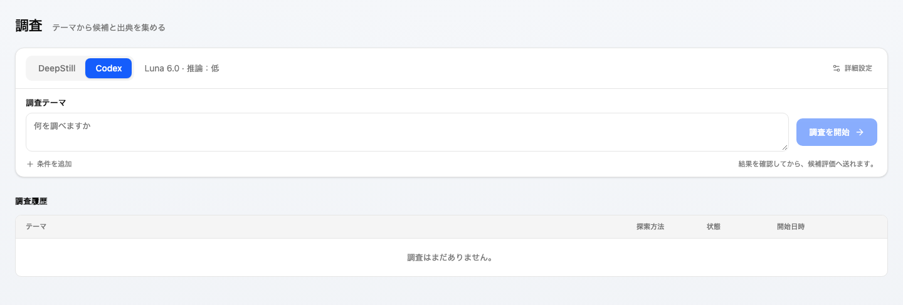

2026-10-04。調査画面でDeepStill（既定）またはCodexを明示的に選ぶ。CodexはLuna 6.0（gpt-6-luna）、推論lowを既定とし、mediumだけを追加選択できる。モデル変更とhigh以上は今回の入力契約に含めない。
既存DeepStill手動調査のsubmit、poll、cancel、既定予算、既存リクエストhashを維持する。engine省略はdeepstillである。汎用ResearchEngine Brokerや自動Queue探索の再設計は行わない。Codex失敗、時間到達、予算到達、API再起動による中断時に別の探索や同じ探索を自動実行しない。
Codexは候補集合を返す。知見、関連性、URL、資料名、短い抜粋または箇所、情報時点、不確実性、反証を保持する。source_readとsearch_summaryを区別する。source_readはCodex自身の申告であり、ContextStillが原文サイトを取得し抜粋と照合したという意味ではない。DeepStillのsnapshot hash検証と同じ強度を主張しない。候補数は上限であり最低数ではない。候補ゼロはinsufficient_evidenceとして部分終了にする。
探索結果の保存先はmanual_research_runsで、直接Knowledgeを登録しない。終了後、利用者が選んだ候補をregisterCandidate経由で既存coveringEvidenceのpendingへ送る。出典・確認状態・不確実性・調査ID・result hashを本文とorigin metadataに残す。globalまたは絶対repoPathによるproject scopeを明示する。成功receiptはrunとclaim単位で永続化し、同じ登録の再送で候補を重複作成しない。scope変更は409。未確認receiptは自動再登録せず409を返し、キューの確認を求める。
Codexの入力はtopic（400文字まで）、neededInformation、knownInformation、searchScope（各1600文字まで）とその実行の予算だけ。全資料、既存Knowledge、会話履歴を自動で持ち込まない。生成するbriefは16,000 UTF-8 bytesまで。毎回新規SDK threadを作り、resumeしない。SystemContextはsourceResearch.codexExplorationで管理する。
既存Codex認証を利用する。CODEX_HOMEまたは既定の~/.codexにあるauth.jsonだけを権限0600の一時homeへ複製し、既存の認証環境変数を選別して渡す。既存CLIのconfig、MCP、plugin、hooks、AGENTS.md、プロジェクトの資料を継承しない。一時work directoryでread-only、approval never、shell network disabled、webSearchMode liveとする。shell、multi_agent、apps、plugins、hooks、goalsを無効化する。完了・失敗・中断後に一時homeとthread履歴を削除する。既存Codex認証設定やDeepStill secretを書き換えない。
確認対象はインストール済み@openai/codex-sdk 0.135.0の型と実装、実行環境のcodex-cli 0.155.1、およびOpenAI公式SDK・app-server・設定資料。TypeScript SDKはcodex exec --jsonを起動する。runStreamed、outputSchema、AbortSignal、turn.completedのinput_tokens、cached_input_tokens、output_tokens、reasoning_output_tokensを利用できる。SDK公開event型に途中の累積使用量通知やthread goal APIはない。
実行環境のapp-server generate-json-schemaでthread/goal/set、thread/goal/getとtokenBudgetの存在を確認した。公式app-serverにもthread/tokenUsage/updatedとgoal APIの記載がある。しかし今回のTypeScript SDKから直接呼べるAPIではなく、exec経路へgoal tokenBudgetを設定できることも確認していない。goal APIは採用しない。これは将来のapp-server adapter導入可否の調査結果であり、厳密なtoken上限の保証ではない。
| 項目 | 既定・上限 | 保証範囲 |
|---|---|---|
| 時間 | 180秒、設定1–300秒 | プログラムのtimerでAbortSignalを発火し、SDKのCLI childへ中断を要求。課金停止時刻やremote実行の即時停止は保証しない。 |
| 探索全体のトークン | 20,000、設定1,000–100,000 | プロンプト目標とturn.completed時の監視。入力＋出力が到達したらtoken_budgetを記録して終了。途中の超過を防げず、最終出力上限やmax_tokensを探索全体の上限と見なさない。 |
| 検索・資料確認 | 12、設定1–25 | プロンプト目安とweb_search item IDの観測。上限を超えるitemを見たら中断。通知時点で既にdispatchされるため、厳密な検索回数上限ではない。SDK型はqueryのみでopenPageとsearchの内訳は保証しない。 |
| 候補 | 最大6、設定1–10 | 取り込む候補数をプログラムで制限。最低数は指定しない。 |
| 出力データ | agent message 128,000 bytes | 超過messageを候補として取り込まない。SDK内部の受信bufferやproviderの生成量まで制限する機能ではない。 |
キャッシュ入力はモデル入力の内数として記録する。input＋outputの合計にcached inputやreasoning outputを二重加算しない。live web searchのcacheとモデル入力cacheは別物である。使用量取得不能はnullであり0に置き換えない。停止時は通常usage未取得となる。部分保存された旧processのusageはusageComplete=falseで保持する。
完了済みagent messageが候補JSONとして検証を通った時点でcheckpointを永続化する。JSONを出す前の検索結果・未完の文章から候補を捏造しない。時間到達、検索観測上限、利用者停止、実行失敗でも最後の検証済み候補を可能な範囲で残す。SDKは途中checkpointを必ず生成するとは限らず、その場合は候補0で終了する。
completed、insufficient_evidence、timeout、token_budget、web_limit、cancelled、failed、invalid_result、interruptedを別の終了理由として保存する。通常完了のみcompleted。それ以外はpartial、failed、cancelled、invalid_resultへ対応する。checkpointと最終結果の保存確認に失敗した場合は完了表示しない。SQLite追加tableは手動探索のoptions・process ownerと候補登録receiptに限り、Rust writerのschema revision 13で作成する。既存DeepStill recordは追加tableなしでもdeepstillと解釈する。
調査画面の探索方法でCodexを選び、テーマを入力して横にある開始ボタンで実行する。必要情報・既知内容・対象や期間は「条件を追加」の補足1欄へ任意で入力する。UIの補足は既存APIのneededInformationへ渡し、knownInformationとsearchScopeのAPI契約は維持する。「詳細設定」でLuna 6.0の推論（低または中）、時間上限、token目標を変更する。詳細設定は重ねて開き、閉じた状態ではフォームの高さを増やさない。履歴は高さ最大256pxの表で表示し、選択された履歴がないときは結果パネルを作らない。履歴から結果を開き、候補を選び「候補評価へ送る」。同じテーマを別方式で入力する操作はフォームを埋めるだけで、利用者の開始操作まで外部消費しない。DeepStillへ追加条件を渡すAPIは既存transportにないため、比較時はテーマに必要な条件を含めるかCodex追加条件を空にして条件を合わせる。
POST /api/manual-research はengine=codexとcodex optionsを追加受理する。GET /api/manual-research/compare?topic=...は直近100履歴内で同一topicの候補数、資料確認ありの数、有用として選んで評価へ送った数、所要時間、input/cache/outputと合計を返す。有用として選択した数は人間の一次判断であり、評価後の採用数や正確性の証明ではない。DeepStillの時間は作成から最終同期までで、内部実測時間や細分tokenは取得できずnullにする。比較対象の追加条件・予算はcodexOptionsで確認できる。異なる条件の結果で優劣を断定しない。
変更前のDeepStill projection、LLM gateway、registerCandidateの25 testsと手動調査SDKなしsmokeは成功。変更後の同testsとCodex追加10 testsの35 testsは成功。Codex testsは完了、予算観測、時間中断、失敗、取消し、改変出典、検索観測、根拠不足、checkpoint保存失敗、実行隔離とLuna制約を確認する。
bun run test:codex-research:smokeは実SDKのCLI transportと隔離SQLiteを使う外部消費なしの検証。候補取り込み、評価queue pending、scope conflict、二重登録防止、時間・予算・取消しの部分保存、旧process中断後の再実行防止を確認する。bun run test:codex-research:live --liveだけが外部サービスを呼ぶ。45秒、token目標6,000、候補最大1で一度だけ試し、自動retryしない。品質・速度がDeepStillより改善したという比較実測は行っていない。
実SDK live検証をLuna 6.0・lowで一度実行した。候補1件、所要25,757ms、input 27,170、cached input 3,328、output 567、reasoning output 170だった。目標6,000を超えたためtoken_budgetで終了し候補を残した。この実測はSDKがターン完了までusageを通知しない制約を示している。DeepStillとの品質・速度比較の実測ではない。
探索機能追加時の対象検証は6 files・48 tests成功（既存25、Codex10、画面4、SystemContext9）。DeepStill手動調査smokeとCodex SDK/SQLite smoke、typecheck、画面build、変更対象lint、Rust schema7 tests、SystemContext checkとboundary、Spec checkは成功した。
全体unitは初回に2254成功・9失敗だった。このうち新しいSystemContext名の期待値1件は追加して対象再検証を通した。残るBedrock providerの8件は今回変更していないclient.destroyとmockの不整合である。全体verifyはsettings.serviceとprovider-connections.serviceの循環で最初のboundary checkが失敗した。別途実行したmaintainabilityとSQLite writer ownershipも、進行中の別変更（設定・agent runtime・provider）のサイズとtest-only openの指摘で失敗した。これらを今回のCodex探索の成功として扱わない。今回のschema追加は専用manual-research-schemaへ置き、既存core-schemaのmanual tableも同じ場所へ移して肥大化を避けた。
テーマと開始ボタンを横に置き、補足1欄を任意で開く。推論・時間・token目標は詳細設定を重ねて開く。DeepStillの既定、既存API、実行処理、候補評価への取り込み経路を維持する。 履歴は最大256pxのスクロール表とし、狭い画面では表内を横にスクロールする。

画面更新後の対象3 files・19 testsは成功。既定のDeepStill送信、Codex低・中と時間・token設定、閉じた補足の保持と送信、詳細設定のEscape・外側クリック、空の結果パネル除去、比較の明示開始と候補評価送信を確認した。 ブラウザでは幅1440pxで入力エリア207px、履歴30件で見出しを含む履歴エリア288px、幅390pxでページの横はみ出しなしを確認した。詳細設定を開いてもフォームは207pxを維持した。 ブラウザのAPI応答はすべて固定し、探索開始POSTは0件、外部サービス呼出しは0件。typecheck、変更対象lint、画面build、import boundary、Spec checkは成功。探索の品質・速度の追加実測は行っていない。